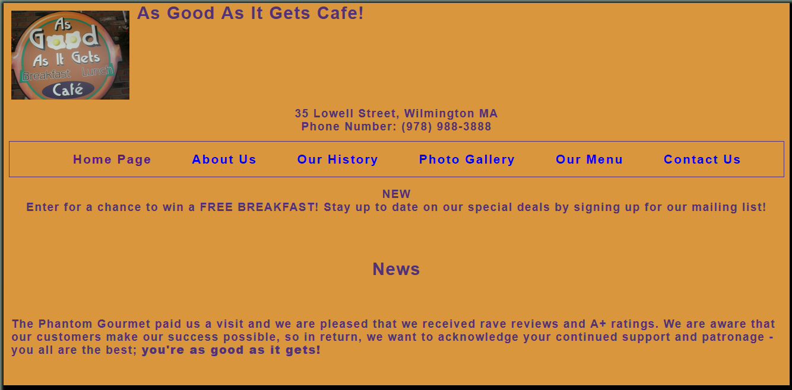

My current skills:
Web Design Skills
 HTML
HTML
CSS
 Photoshop
Photoshop
 Illustrator
Illustrator
Dreamweaver, Sublime Text 2, Notepad++
Other convenient skills
 Windows, OS X (macOS), and Ubuntu operating systems
Windows, OS X (macOS), and Ubuntu operating systems
Excellent Computer & Technology troubleshooter
93~ Words Per Minute typing speed.
Microsoft Office and Apple iLife Productivity Suite
Social Media, such as Facebook, Twitter, and Instragram
My Hobbies
Traveling & Hiking
 Nintendo Games
Nintendo Games
 Photography
Photography
Typography
Tea
My Projects
As Good As It Gets Cafe

This website was the first project that I did on my own for skill-building. As Good As It Gets Cafe is a restaurant that I visit frequently. I decided to recreate their website based on my intrepretation. I used the company's colors for the color scheme, which I believe worked pretty well. For the online menu, the official website uploads their real, paper menu via PDF. While this is a easy-to-implement approach and gets the job done for desktop users, I feel like this is a cumbersome experience for mobile users on cellular networks. I opted for a full HTML menu with links within the page. This would enable users to jump to each food section of the menu, opposed to opening each PDF and hoping to see the section that wished to browse.
Historic Homes Realty (Midterm for HTML Class)

My HTML professor was a realtor by day, and a web design and development instructor by night. For our midterm project, he wanted us to design our own realty website using the tools and techniques that we used throughout the semester. I focused on a historic homes website since I am most familiar with older-style homes, and it could have been the most unique compared to other projects. The page required an index, buy, sell, and rent page, with a contact page as extra credit.
Causeplay New England
Causeplay New England was the first website that I was asked to create professionally. One of my high school friends founded a chariable Cosplay group (People who dress in as their favorite cartoon characters) that dresses up as Comic Book characters and attends other non-profit charity events such as the Special Olympics, Children's Cancer Hospitals, and Austism Awareness events. The founder confronted me and said he desparately needed a new website, and I agree to do it for free due to my need of experience and the purpose of his group.
CSS Midterm - A showcase of what's possible

This was my CSS midterm project. The objective was to showcasw what is possible with CSS opposed to creating a beauiful website. The website took advantage of promoting good color theory, psuedo css classes such as :hover and ::first-letter, fixed elements on a page, and subtle background images inside divs (such as the gradient banner on the top of the page).